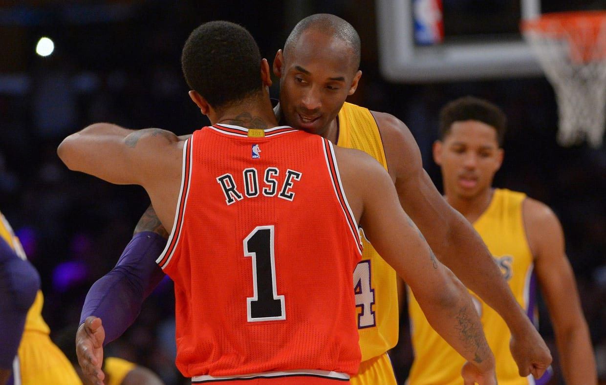

Statistical milestones reached by current and former basketball players part of the NBA
My name is Patrick Gallagher. I am an NBA enthusiest and an enjoyer of basketball in general. The NBA has been my life for as long as I can remember, spending my winters glues to "NBA on TNT." My favorite team is the Chicago Bulls. My idol growing up was Derrick Rose. I would spend my summer days tring to recreate the things I saw him do on TV in my driveway
I like to pay my respects towards the greats of the past, like Wilt Chamberlain. Some NBA fans like to downplay the accomplishments of the players from long ago, and try to say that their records do not count because the compitiion was not as good. I completely disagree. One day my generation will be older as well, and the thought of younger kids trying to explain to me how my favorite players from the early 2010's are frauds scares me.
